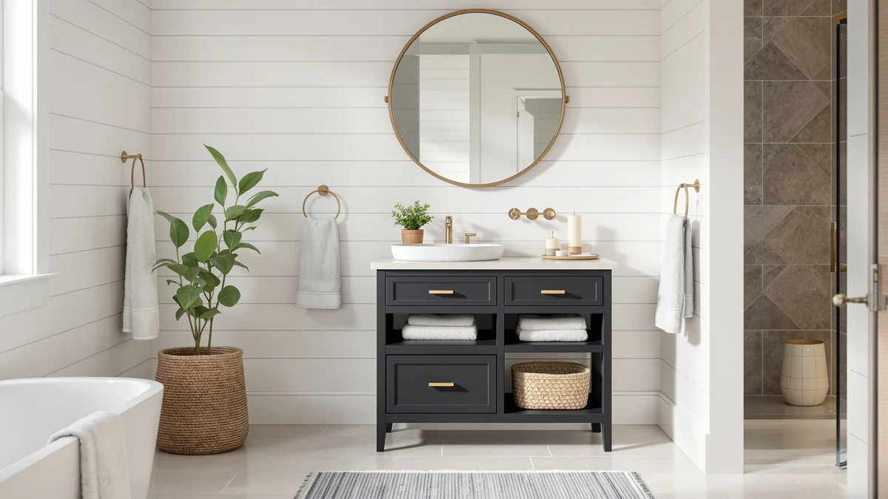

Best Small Bathroom Table with Storage (2026)
Prices and picks verified as of September 2026. Independent, reader-supported reviews.


Quick Answer
The Homhedy Farmhouse Bathroom Storage Cabinet is our pick for the best small bathroom table with storage for most people, combining a compact 11.8 by 23.6 by 31.5 inch footprint with an enclosed door for $79.99. If your bathroom has no floor space to spare, the Shintenchi, IFGET, ALLZONE, and Kitsure over-the-toilet units in this guide turn the wall above your toilet into storage instead.
Our pick: Homhedy Farmhouse Bathroom Storage Cabinet, $79.99 Check Price on Amazon
Bottom line: our top pick is the Homhedy Farmhouse Bathroom Storage Cabinet with 2 Doors at $79.99. The best budget option is the Kitsure Over the Toilet Storage at $49.99.
Things to Know Before You Buy
- A small bathroom table with storage does not have to sit on the floor. Five of the seven picks in this guide mount above the toilet instead of taking up any floor space.
- Price does not track directly with storage capacity. The $49.99 Kitsure tower has more shelf tiers than the $139.99 IFGET unit, which spends its budget on height and an arched top instead.
- Enclosed cabinets like the Homhedy pick keep clutter out of sight, while open-tier units like the ALLZONE organizer trade that for easier at-a-glance access.
- Measure the gap between your toilet tank and the ceiling before buying an over-the-toilet unit. The IFGET unit needs 77.2 inches of clearance, nearly a foot more than the Kitsure tower.
- All seven picks use a metal frame, either alone or paired with a wood door or wood-look surface, which holds up to bathroom humidity better than untreated wood shelving.
Finding the best small bathroom table with storage means balancing footprint, material, and price against a bathroom that already has too little floor space. A tall linen tower solves a different problem than a low cabinet next to the sink, and an over-the-toilet unit only helps if the gap above your toilet is tall enough to use. We compared seven picks from Homhedy, Shintenchi, IFGET, ALLZONE, and Kitsure on price, dimensions, and material to help you match a piece to the space you actually have.
The Homhedy Farmhouse Bathroom Storage Cabinet is our top pick for most small bathrooms. At $79.99, it uses a metal and wood frame measuring 11.8 by 23.6 by 31.5 inches, small enough for a corner or an open wall but sturdy enough to hold towels, toiletries, and cleaning supplies behind a closed door. It also comes in a second finish at the same price and dimensions, so you can match an existing fixture without giving up any storage.
If your bathroom has a wasted gap above the toilet instead of open floor space, the five over-the-toilet units in this guide range from a $49.99 nine-tier tower to a $139.99 arched unit tall enough to use nearly eight feet of wall height. We researched published specs, current pricing, and patterns in verified owner reviews for every product below.
Why You Should Trust Us
Ilane Tall covers bathroom storage and small-space furniture for Best Bathroom Storage, focusing on pieces that fit bathrooms too small for standard furniture. We do not run a physical testing lab, and we do not claim to have installed every small bathroom table with storage in this guide ourselves. Instead, we compare published dimensions, current pricing, and patterns in verified owner reviews across every product we cover, and we say so clearly whenever a spec like a rating or review count is not available. That research process is how we built the list below.
How We Picked
We started with every bathroom storage piece in our product database that ships as a freestanding cabinet or an over-the-toilet unit, since those two categories cover most of the small bathroom table with storage searches we see. From there we narrowed the list to products with a stated material and either a full set of dimensions or a clear tier count, which ruled out listings too vague to compare. We also made sure the final seven spanned a real price range, from just under $50 to just over $139, so the guide works whether you want the cheapest option or the tallest one.
How We Compared
We compared the seven finalists on price, material, footprint, and how much of a small bathroom's vertical or floor space each one actually uses. For the over-the-toilet units, we weighed tier count and overall height against the price, since a taller unit with more shelves is not automatically the better small bathroom table with storage for every gap. For the two Homhedy cabinets, we compared identical dimensions and prices across finishes so the choice comes down to style, not spec. We also read available owner reviews for recurring complaints about assembly, stability, and door hardware, and we call those out in the pros and cons below.
Our Picks

Homhedy Farmhouse Bathroom Storage Cabinet
What we like
- Compact 11.8 by 23.6 by 31.5 inch footprint fits a corner or open wall in a small bathroom
- Enclosed cabinet door keeps towels and toiletries out of sight instead of stacked on open shelves
- Metal and wood frame construction holds its shape better than all-plastic storage towers
Flaws but not dealbreakers
- At $79.99, it costs more than the over-the-toilet units in this guide
- A closed cabinet door takes an extra step compared to grabbing an item off an open shelf
| Material | Metal / wood |
| Size | 11.8"D x 23.6"W x 31.5"H |
The Homhedy Farmhouse Bathroom Storage Cabinet is our top pick because it works like an actual piece of furniture instead of another shelving ladder propped against the wall. At 11.8 inches deep, 23.6 inches wide, and 31.5 inches tall, it is compact enough for a corner next to the vanity or an open stretch of wall, and the metal and wood frame construction gives it enough rigidity to hold folded towels and full-size bottles without the sides bowing.
At $79.99, this cabinet costs more upfront than any of the over-the-toilet units in this guide, but the enclosed door means your bathroom looks tidy even when the shelves behind it are not. Owners consistently point to the farmhouse styling as the reason they picked this over a plainer metal rack, and the frame holds up well under normal daily use according to verified reviews. The tradeoff is convenience: reaching for a towel means opening a door instead of grabbing it off an open shelf, which matters if you use this cabinet several times a day. For most small bathrooms, that tradeoff is worth it for a piece that looks finished from across the room.

Homhedy Farmhouse Bathroom Storage Cabinet
What we like
- Same 11.8 by 23.6 by 31.5 inch dimensions as our top pick, so it fits the identical footprint
- Gives you a second finish option to match cabinetry or hardware already in your bathroom
- Metal and wood frame matches the build quality of the original Homhedy cabinet
Flaws but not dealbreakers
- Priced the same as our top pick at $79.99, so there is no cost advantage to choosing this finish instead
- Since it is the same design, it will not solve a fit problem the first cabinet does not already solve
| Material | Metal / wood |
| Size | 11.8"D x 23.6"W x 31.5"H |
This second Homhedy Farmhouse Bathroom Storage Cabinet listing shares every spec with our top pick: the same 11.8 by 23.6 by 31.5 inch footprint, the same metal and wood frame, and the same $79.99 price. The only reason to choose one over the other is finish, since Amazon lists them as separate products rather than color options on a single listing.
If the farmhouse styling of our top pick fits your bathroom but the specific finish does not match your existing fixtures or hardware, this listing gives you a second option without any change in size, price, or storage capacity. Everything we said about the frame holding up under daily use and the enclosed door keeping the bathroom tidy applies here as well, since the underlying cabinet is identical. Check both product photos before ordering, since the finish is the only variable, and Amazon listings for near-identical furniture pieces sometimes get restocked with different photos over time.

Shintenchi Over the Toilet Storage
What we like
- Fits directly over the toilet, using wall space most small bathrooms leave empty
- Wood door front closes off shelves instead of leaving items exposed on open bars
- At $60.99, it costs less than the Homhedy cabinet while still offering a closed storage option
Flaws but not dealbreakers
- An over-the-toilet frame needs to straddle the toilet tank, so measure before ordering
- The listing does not include full external dimensions, only the wood door material
| Material | Metal / wood |
| Size | Wood Door |
The Shintenchi Over the Toilet Storage unit turns the dead wall space above a toilet tank into usable storage, which matters most in bathrooms too small to fit a freestanding cabinet like the Homhedy on the floor. A metal frame supports the unit while a wood door front closes off the shelves, giving you the same hidden-storage look as a cabinet without taking up any floor space at all.
At $60.99, this unit lands below the Homhedy cabinets in price while still offering an enclosed door instead of open shelving. The wood door front is the detail owners mention most often in verified reviews, since it looks closer to real furniture than the wire-shelf over-toilet racks common at this price. The listing does not publish full external dimensions beyond the wood door material, so measure the height from your toilet tank to the ceiling and the width of the toilet itself before ordering to confirm a clean fit.

Shintenchi Over the Toilet Storage
What we like
- Same wood door and metal frame combination as the other Shintenchi listing, with a proven design
- Sits in the same over-toilet footprint, so it fits the same bathrooms as its sibling listing
- Enclosed storage keeps the area above the toilet from turning into another open shelf
Flaws but not dealbreakers
- At $67.99, it costs $7 more than the other Shintenchi listing for the same stated specs
- Like the other Shintenchi unit, the listing does not publish full external dimensions
| Material | Metal / wood |
| Size | Wood Door |
This second Shintenchi Over the Toilet Storage listing uses the same wood door and metal frame design as the first, priced at $67.99 instead of $60.99. Amazon sometimes lists near-identical over-toilet units separately when a seller updates a design slightly or runs a different size batch, and that appears to be the case here.
Functionally, this unit solves the exact same problem as its sibling listing: it turns unused wall space above the toilet into enclosed storage without needing floor space. If you compare the two Shintenchi listings side by side, check current pricing and available stock before choosing, since a $7 gap between otherwise identical specs usually comes down to which listing has better availability at the time you order rather than a real difference in the unit itself.

IFGET Arched Over The Toilet
What we like
- At 77.2 inches tall, it uses more vertical wall space than any other pick in this guide
- The arched top gives it a more furniture-like silhouette than a boxy rectangular rack
- A 9-inch depth keeps it slim enough to clear a toilet tank in most layouts
Flaws but not dealbreakers
- At $139.99, it is the most expensive pick in this guide by a wide margin
- A unit this tall needs a ceiling height and wall clearance most older bathrooms may not have
| Material | Metal / wood |
| Size | 23.62 inches (W) x 77.2 inches (H) x 9 inches (D) |
The IFGET Arched Over The Toilet unit is built for bathrooms with the ceiling height to use it. At 77.2 inches tall, 23.62 inches wide, and only 9 inches deep, it climbs nearly six and a half feet up the wall above the toilet while staying slim enough to clear most tanks, and the arched top gives it a more finished, furniture-like look than the flat-topped racks in this category.
At $139.99, this is the priciest pick we compared, and the price reflects the extra height and the arched detailing rather than premium materials. Owners who buy this unit are typically trying to maximize storage in a small bathroom without adding floor furniture, and the extra vertical inches mean more shelves in the same footprint as a shorter rack. Before ordering, measure the distance from your toilet tank to the ceiling, since a unit this tall will not fit under a sloped ceiling or a low soffit the way the shorter Shintenchi units do.

ALLZONE Bathroom Organizer Over The
What we like
- Four open tiers give you more individual shelves than an enclosed cabinet of the same size
- Open shelving makes it easy to see what you have without opening a door
- Mid-range $89.99 price sits between the budget over-toilet racks and the pricier arched unit
Flaws but not dealbreakers
- Open tiers mean everything is on display, which some owners prefer to avoid in a shared bathroom
- No enclosed storage option, so it will not hide clutter the way the Homhedy cabinet does
| Material | Metal / wood |
| Size | 4-Tier |
The ALLZONE Bathroom Organizer Over The Toilet trades an enclosed door for four open tiers, which means more individual shelves in the same over-toilet footprint used by the other racks in this guide. If you would rather see everything at a glance instead of opening a cabinet door each time, the open design here does that job.
Priced at $89.99, it sits between the budget Shintenchi and Kitsure units and the premium IFGET arched unit. That makes it a mid-range option for anyone who wants more shelves without paying for the tallest unit in the lineup. Verified owners describe the four tiers as sturdy enough for everyday toiletries and folded towels, though a few note that open shelving shows clutter more readily than a closed cabinet. If keeping items out of sight matters more than seeing them at a glance, the Homhedy cabinet or either wood-door Shintenchi unit is the better fit.

Kitsure Over the Toilet Storage
What we like
- At $49.99, it is the least expensive pick in this entire guide
- Nine tiers pack more individual shelf levels into one unit than any other pick here
- Standing 68.7 inches tall, it still fits under most standard bathroom ceilings
Flaws but not dealbreakers
- Nine narrow tiers mean less depth per shelf than a wider cabinet like the Homhedy
- At this price, expect a lighter-gauge frame than the pricier IFGET or ALLZONE units
| Material | Metal / wood |
| Size | 9 Tiers (68.7"H) |
The Kitsure Over the Toilet Storage tower is the budget pick in this guide at $49.99, and it makes up for the lower price with nine separate tiers stacked across a 68.7-inch-tall frame. That is more individual shelf levels than any other product we compared, which works well if you want to sort items into narrow categories rather than piling everything onto three or four wider shelves.
Standing 68.7 inches tall, this unit fits under most standard bathroom ceilings without the clearance concerns that come with the taller IFGET arched unit. The tradeoff for nine tiers on a budget frame is shelf depth: each level holds less than a single wide shelf on the Homhedy cabinet or the ALLZONE organizer, so this is a better fit for small, frequently used items like toiletries and rolled washcloths than for bulky towels. For the price, it remains the easiest way to add real storage above a toilet without spending close to $140 on the arched alternative.
Quick Comparison
| Product | Material | Price | Rating | Best for | Get it |
|---|---|---|---|---|---|
| Homhedy Farmhouse Bathroom Storage Cabinet | Metal / wood | $79.99 | 4 | Best overall pick | View on Amazon → |
| Homhedy Farmhouse Bathroom Storage Cabinet | Metal / wood | $79.99 | 4 | Alternate finish of our pick | View on Amazon → |
| Shintenchi Over the Toilet Storage | Metal / wood | $60.99 | 4 | Wood-door over-toilet cabinet | View on Amazon → |
| Shintenchi Over the Toilet Storage | Metal / wood | $67.99 | 4 | Larger wood-door cabinet | View on Amazon → |
| IFGET Arched Over The Toilet | Metal / wood | $139.99 | 4 | Tallest, arched design | View on Amazon → |
| ALLZONE Bathroom Organizer Over The | Metal / wood | $89.99 | 4 | Four open tiers | View on Amazon → |
| Kitsure Over the Toilet Storage | Metal / wood | $49.99 | 4 | Most tiers for the price | View on Amazon → |
What is the best small bathroom table with storage for most bathrooms?
The Homhedy Farmhouse Bathroom Storage Cabinet is our top pick.
What is the best budget option in this guide?
The Kitsure Over the Toilet Storage tower is the least expensive pick at $49.99.
The Competition
We also looked at wicker and rattan bathroom storage baskets during research, but left them out of this guide because open weave materials hold up worse to bathroom humidity than the metal-and-wood cabinets and over-toilet units above. Freestanding furniture-style vanities came up too, but most run wider than 30 inches, which defeats the point of a small bathroom table with storage in a bathroom already short on floor space. If your space is tight enough that even these seven picks feel too big, our guide to bathroom storage for small spaces covers lower-profile options. Between a floor cabinet and an over-toilet unit, the Homhedy Farmhouse Bathroom Storage Cabinet is still the one we'd point most small bathrooms toward, for the reasons covered above.